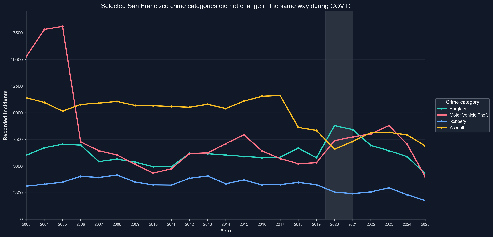

Reading police incident data with care
This story uses the merged San Francisco police incident records from 2003 to 2025, created during the course.
It is important to note, that the rise in one category does not, by itself, prove one cause, and a drop in another does not mean the underlying problem disappeared. Still, the data clearly shows that COVID did not affect all recorded crime categories equally.
Not all categories moved in the same direction during COVID
The first figure establishes the central claim. During the COVID period, burglary and motor vehicle theft rose relative to the years jjust before, while assault declined. And robbery appears no have stayed relatively consistant.
This means that any single statement about “crime going up” or “crime going down” doesnt capture the full picture. The pandemic appears to have changed the composition of recorded crime, not just the overall total.

A disruption to routine life can reshape opportunity
One plausible interpretation, is that the pandemic changed everyday life in big cities. Movement patterns, business activity, empty streets, closed workplaces, are all examples of routines that were greatly affected during the pandemic. And at the same time, routines that greatly affect the oppurtunities for crime. Empty streets and closed businesses may have created more opportunities for burglary and motor vehicle theft, while fewer interactions in public spaces may have reduced assault.
Burglary also became less concentrated geographically
The second visualization focuses on burglary. Before COVID, burglary was more tightly concentrated in fewer hotspots. During COVID, that concentration actually spreads across a broader area of the city.
This suggests that the pandemic change was not just more burglary incidents in the same places. It also changed where burglary was recorded throughout San Francisco.
The shift was uneven across districts too
Category-level change is only part of the picture. Once the city is broken into police districts, the COVID period looks uneven there as well. Some districts changed much more than others.
District comparisons show big differences
The final visualization compares average yearly incidents in each police district before COVID and during COVID. You can switch between burglary, motor vehicle theft, robbery, and assault, using the selector on the right hand side.
The main story is divergence, not one overall trend
The clearest takeaway is not that COVID simply increased or decreased crime in San Francisco. But rather, that the pandemic created a divergence. Burglary and motor vehicle theft rose, assault fell, and burglaries appears to have widened geographically.
This makes the COVID period look less like one clean trend line and more like a reshaping of the general recorded crime footprint. That is a more careful and more honest conclusion than just treating all categories the same.